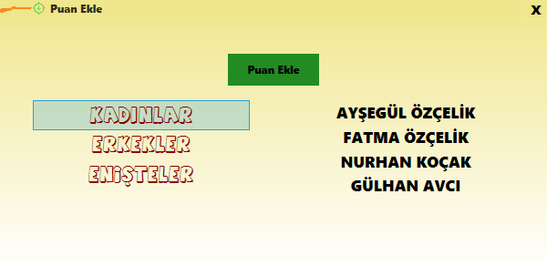
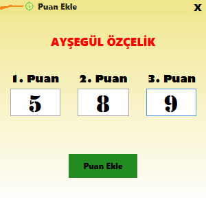
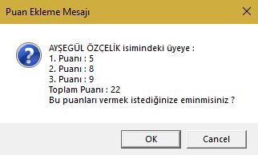

Bu pencere, üyelere puan eklemek için kullanılır.(Grupsuz üyeler gözükmediği için puan eklenemez.Grubu var iken puanı eklenip,sonradan gruptan çıkarılan üyeler puan sıralamasında gözükmezler.)
1- Pencere açıldığında, önceden kayıt edilmiş gruplar gözükür. Bu gruplardan birine sol tıklanılırsa, bu gruba ait olan puanı daha verilmemiş üyeler gözükür.Gruba mensup üyenin üstüne sol tıklanılarak 'Puan Ekle' denilir.

2- Gelen pencerede 3 tane puan kutusu olacaktır.Bu kutulara üyenin elde ettiği puanlar yazılıp 'Puan Ekle' denilir.

3- Çıkan uyarı penceresine 'Evet' yada 'Hayır' denilir.
